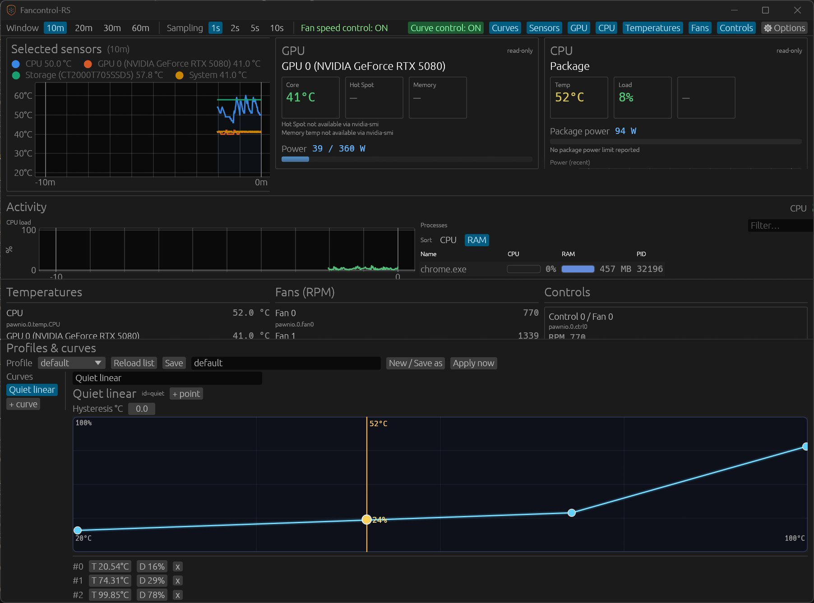
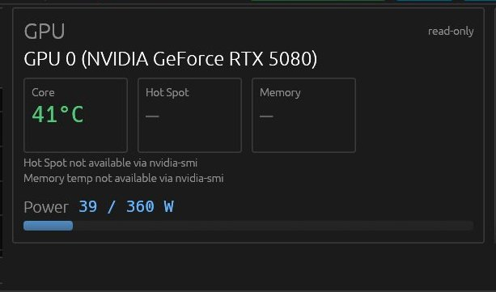
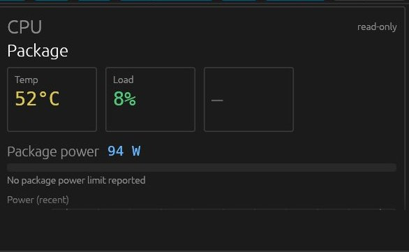
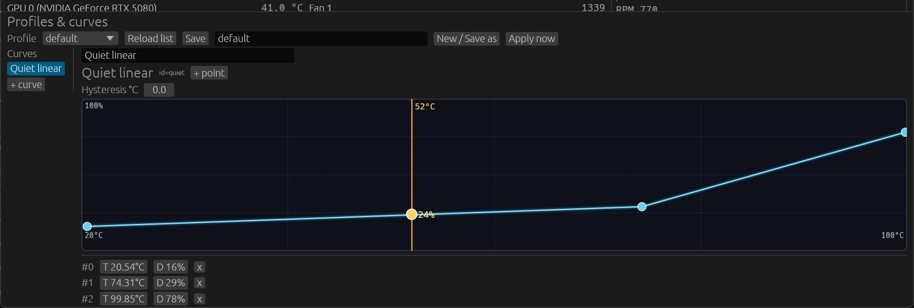

Fancontrol-RS
Windows fan control and monitoring for GPU, CPU and RAM activity, written in Rust.
PawnIO only, no WinRing0. Curves, profiles, AIO fans on motherboard headers.




Windows fan control and monitoring for GPU, CPU and RAM activity, written in Rust.
PawnIO only, no WinRing0. Curves, profiles, AIO fans on motherboard headers.




Curves, profiles, live duty sliders, multi-sensor temperature graph. Case fans and AIO fans on motherboard headers (not a pump/RGB vendor app).
CPU load history and top processes (CPU % and RAM), filterable and sortable.
PawnIO only for Super I/O / EC access. Never ships WinRing0 or other known-vulnerable ring-0 drivers.
NVIDIA GPU multi-metric via fixed-path nvidia-smi (temp, power, util, clocks, VRAM) plus CPU package watts and optional DDR5 DIMM temps. SSD/NVMe via native DeviceIoControl (no PowerShell).
egui app, system tray, first-run write consent, 8 languages (en/fr/de/es/it/zh/ja/lb). When PawnIO needs elevation, a Restart as Administrator button shows the Windows UAC prompt (no silent elevation).
sample, list-sensors, list-controls, test-duty, sample-storage, and more.
Every desktop board with a Super I/O / EC HWM path should work in principle: broad chip coverage (Nuvoton NCT668x, banked NCT679x, ITE IT87, and friends) is the goal via PawnIO. Boards are only marked certified once someone has actually sent logs.
| Certified so far | NCT6687D-class EC HWM · ASUS ROG STRIX B550-A GAMING (banked NCT / NCT6798-class), full read + PWM write on maintainer hardware |
|---|---|
| Help wanted | Any other board (ASUS / MSI / Gigabyte / ASRock / …). Run detect + list-sensors + list-controls and open a hardware report. |
Release binaries are built on windows-latest in GitHub Actions and published with a SHA256 checksum. They are not code-signed yet, so expect SmartScreen and occasional Defender heuristics, the same class of warning most tools that talk to Super I/O / EC hardware get.
nvidia-smi for GPU metrics, native storage IOCTLs for SSD/NVMe temps, and (when elevated with PawnIO) CPU package power via MSR modules - no PowerShell, no WMI for those paths.
SignPath Foundation provides free Authenticode signing for qualifying open-source projects. fancontrol-rs meets the OSS licensing, active-maintenance, and no-telemetry criteria and is applying for coverage. See docs/SIGNING_AND_DISTRIBUTION.md for the full signing plan. This page will be updated with the standard SignPath attribution once a certificate is issued.
| specs/ | Spec-driven design: vision, architecture, hardware backend, UI, roadmap |
| SUPPORTED_HARDWARE.md | Chip matrix, prerequisites, validation |
| SIGNING_AND_DISTRIBUTION.md | Signing options, release checklist, CI notes |
| SECURITY.md | Reporting, CodeQL/audit, SHA256 verify, signing status |
| CONTRIBUTING.md | Bugs, PRs, AI contribution policy |